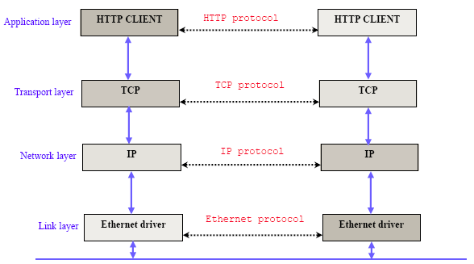
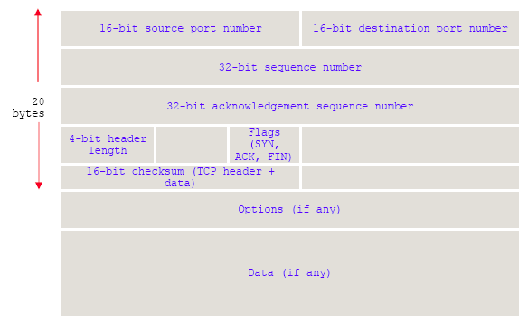
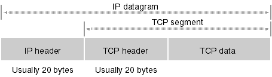
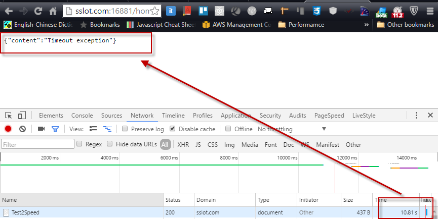

分享如何正確的使用在Asp.Net中的HttpWebRequest兩個Timeout，Timeout與ReadWriteTimeout。
Introduction
在開始前要先談一下TCP datagrams 與 Chunked transfer encoding。
TCP datagrams

使用TCP協議來傳輸數據的HTTP是Web服務器和客戶端使用的特殊協議。而TCP在傳輸中會將封包拆成一份IP header與多份TCP segment(TCP header + TCP data)。


簡單來看就是一個header來告訴你連線位置與請求狀況後，會切分成多份封包依序傳輸，當封包都接收完才算完成傳輸，並將傳輸內容整理成真實的檔案。
Chunked transfer encoding
分塊傳輸編碼（Chunked transfer encoding）是HTTP中的一種數據傳輸機制，允許HTTP由網頁伺服器發送給客戶端應用的數據可以分成多個部分。分塊傳輸編碼只在HTTP協議1.1版本（HTTP/1.1）中提供。
通常，HTTP應答消息中發送的數據是整個發送的，Content-Length消息頭欄位表示數據的長度。數據的長度很重要，因為客戶端需要知道哪裡是應答消息的結束，以及後續應答消息的開始。
也因為有此機制導致我們在寫程式時需要用一個stream來當緩衝接收所收到資料並把他讀出。

HttpWebRequest.Timeout
The time before which the server has to accept the client’s request. Note that this doesn’t include the DNS resolution time, which is managed by the ServicePointManager.
HttpWebRequest.ReadWriteTimeout
The time before which the client has to receive the entire body of the response from the server. Note that this timeout starts only after the server accepts the request.
Default value is 300,000 milliseconds (5 minutes).
而無論TCP datagrams或是分塊傳輸編碼的機制將導致我們需要ReadWriteTimeout來判斷是否寫入每一個chunk資料流讀寫都在時間內。
Use Scenario
使用HttpWebRequest.Timeout
- 判斷Connection是否在指定時間內建立連線
- 每段封包建立連線限定時間
使用HttpWebRequest.ReadWriteTimeout
- 指定時間內做完single chunk資料流(data streaming)的讀寫
簡單來講當我們需要強制在一段時間內做完一個使用HttpWebRequest的回應用TimeoutStream會較佳。
Misconceptions
但這邊要聲明如果用HttpWebRequest.ReadWriteTimeout則是錯誤的觀念。要達到在限制的下載時間內完成下載否則就拋出例外錯誤的話是需要自己去實作該功能的。 這邊提供一個範例來說明該如何實作:
請求遠端的一個檔案，這邊用
DOWNLOAD
Download Test Files | 100Kb, 1Mb, 10Mb, 100Mb, 1Gb, 5Gb and 10 Gb.的10MB檔案做範例:

這邊建置一個MVC空的Action來測試，而執行的範例程式碼如下:
- 設定HttpWebRequest.Timeout 確認連線建立不超過3秒
- 設定HttpWebRequest.ReadWriteTimeout 確認3秒內做完每一個chunk的讀寫
- 使用自行建置的TimeoutStream來控制整個下載的過程不超過10秒
public ActionResult Test2Speed()
{
var result = new JObject();
var request = (HttpWebRequest)WebRequest.Create("http://speedtest.ftp.otenet.gr/files/test10Mb.db");
request.Timeout = 3 * 1000;
request.ReadWriteTimeout = 3 * 1000;
try
{
using (var pageResponse = request.GetResponse())
{
var stream = pageResponse.GetResponseStream();
using (var myStreamReader = new StreamReader(new TimeOutStream(stream, 10 * 1000), Encoding.GetEncoding("UTF-8")))
{
var data = myStreamReader.ReadToEnd();
result.Add("content", "success");
}
}
}
catch (TimeOutException e)
{
result.Add("content", e.Message);
}
catch (Exception e)
{
result.Add("content", e.Message);
result.Add("stack", e.StackTrace);
}
return this.Content(JsonConvert.SerializeObject(result), "application/json");
}這邊建置一個TimeOutStream繼承Stream，並設定一個計時器，在逾時時會丟出例外(TimeOutException)
public class TimeOutStream : Stream
{
private Stream inner;
private System.Timers.Timer timer;
private Exception ex;
public TimeOutStream(Stream inner, int fetchTimeoutInMs)
{
this.timer = new System.Timers.Timer();
this.timer.Enabled = true;
this.timer.AutoReset = false;
this.timer.Interval = fetchTimeoutInMs;
this.timer.Elapsed += this.TimeOutEvent;
this.inner = inner;
this.timer.Start();
}
public override void Flush()
{
this.inner.Flush();
}
public override long Seek(long offset, SeekOrigin origin)
{
this.ThrowException();
return this.inner.Seek(offset, origin);
}
public override void SetLength(long value)
{
this.inner.SetLength(value);
}
public override int Read(byte[] buffer, int offset, int count)
{
this.ThrowException();
var result = inner.Read(buffer, offset, count);
/* HERE I COULD CALL A CUSTOM EVENT */
return result;
}
public override void Write(byte[] buffer, int offset, int count)
{
this.ThrowException();
this.inner.Write(buffer,offset,count);
}
public override bool CanRead {
get
{
return this.inner.CanRead;
}
}
public override bool CanSeek
{
get
{
return this.inner.CanSeek;
}
}
public override bool CanWrite
{
get
{
return this.inner.CanWrite;
}
}
public override long Length
{
get
{
return this.inner.Length;
}
}
public override long Position
{
get
{
return this.inner.Position;
}
set
{
this.inner.Position = value;
}
}
private void TimeOutEvent(object sender, ElapsedEventArgs eArgs)
{
this.ex = new TimeOutException("Timeout exception");
this.timer.Stop();
}
private void ThrowException()
{
if (this.ex!=null)
{
throw this.ex;
}
}
}這邊自行定義TimeOutException
public class TimeOutException : Exception
{
public TimeOutException()
{
}
public TimeOutException(string message)
: base(message)
{
}
public TimeOutException(string message, Exception inner)
: base(message, inner)
{
}
}結果如下:
